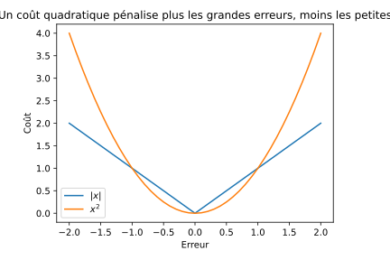
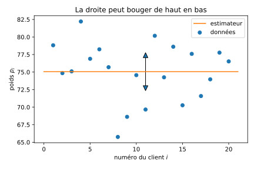
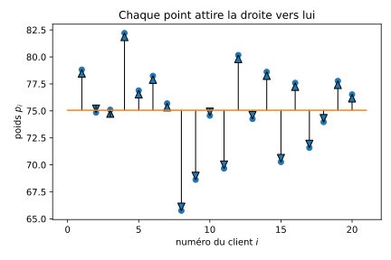
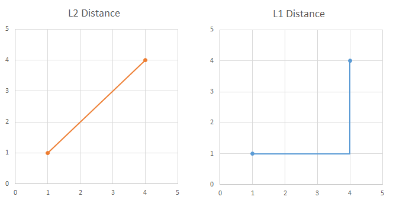

La moyenne est un estimateur statistique très souvent utilisé dans le langage courant. On calcule la moyenne de ses notes, le poids moyen des clients de McDonald's, ou encore la durée moyenne de séjour d'un patient à l'hôpital. Mais la moyenne, c'est quoi au juste ? Dans cet article, je propose d'aborder la définition d'une moyenne comme un estimateur statistique qui minimise un coût. Cette approche permet de montrer la similarité entre les estimateurs les plus connus : la moyenne, la médiane et le mode. Exemple d’introduction Imaginons que l’on passe une journée complète à jouer à un jeu d’argent dans lequel on se place à l’entrée d’un restaurant. Le but du jeu est de deviner à l’avance le poids du prochain client qui va entrer. Si l’on se trompe, on paye la différence à l’équipe adverse : par exemple, si je prédis 80kg alors que le prochain client pèse 85kg, je paye 5 euros à l’équipe adverse. Comment choisir notre réponse pour minimiser nos pertes ? On pourrait calculer le poids moyen des consommateurs présents dans le restaurant et choisir cette moyenne comme réponse. Mais est-ce vraiment optimal ? Pour répondre à cette question, mettons le jeu en équation. Une suite de clients arrivent et on mesure leurs poids respectifs : $p_1, …, p_{n-1}$ On cherche un estimateur $\mathfrak{e}$ du poids du prochain client $p_{n}$ Pour chaque estimation, on paie un coût linéaire en la différence $\lvert p_n - \mathfrak{e} \rvert$ On considérant que l’on joue toute la journée, cela nous permet de calculer notre coût total : Notre but est de trouver la réponse $\mathfrak{e}$ qui minimise notre coût total $f(\mathfrak{e})$ Le cadre de ce jeu est en fait bien plus générique qu’il n’y parait. En statistiques, la plupart des estimateurs bien connus comme la moyenne et la médiane sont choisis exactement de cette façon : on définit d’abord une fonction de coût qui indique à quel point l’estimateur se trompe, et ensuite on cherche à minimiser cette fonction. En particulier, la médiane est l'estimateur qui minimise un coût proportionnel à l'erreur commise. La moyenne est l’estimateur qui minimise un coût proportionnel au carré de l’erreur, et le mode est l’estimateur qui minimise un coût fixe qui ne dépend pas de l’amplitude de l’erreur commise. Puisque dans notre jeu le coût est proportionnel à l'erreur, la réponse optimale n'est pas la moyenne, mais la médiane ! Les fonctions de coût La moyenne minimise donc la fonction de coût suivante : La médiane minimise : Et le mode (c’est la valeur la plus fréquente) minimise : Vous voyez la similarité entre ces trois fonctions ? À chaque fois c'est simplement l'exposant qui change ($2 \to 1 \to 0$). On les appelle des normes. Changer d'exposant revient à pénaliser les grandes erreurs différemment des petites erreurs. Par exemple, un terme quadratique $\lvert p_i - \mathfrak{e} \rvert^2$ pénalise beaucoup plus les grandes erreurs qu'un terme linéaire, et beaucoup moins les petites erreurs. Ce phénomène est illustré sur le graphe ci-dessous. On voit que pour les erreurs plus petites que $1$, la fonction orange ($x^2$) induit un coût moins grand que la fonction bleue ($x$). La tendance s'inverse à mesure que l'erreur grandit.  En étudiant ce graphe, on comprend pourquoi la moyenne est moins robuste que la médiane : les termes quadratiques induisent des perturbations plus grandes dans la fonction de coût que les termes linéaires. Par exemple, imaginons que l'on dispose des revenus annuels de 20 foyers dans un même quartier (en milliers d’euros) : 78.8k, 74.8k, 75.1k, 82.2k, 76.9k, 78.2k, 75.7k, 65.8k, 68.6k, 74.6k, 69.7k, 80.2k, 74.3k, 78.6k, 70.3k, 77.6k, 71.6k, 74.0k, 77.8k, 76.5k. La moyenne est de 75k. La médiane est aussi de 75k. Un nouvel arrivant arrive dans le quartier. Il gagne 500 mille euros par an. La médiane ne change pas et reste à 75k alors que la moyenne passe à 95k ! Le terme quadratique appliqué à 500k introduit un coût de : alors que le terme linéaire introduit seulement un coût de : Une interprétation physique On peut visualiser le fait de minimiser la fonction de coût comme suit : les données sont réparties sur un graphe, l’axe des abscisses (en bas) représente le numéro du client et l’axes des ordonnées (à gauche) représente son poids. Sur l’image ci-dessous, je représente le poids de chaque client par un point bleu. Chercher un estimateur revient à chercher une droite horizontale (représentée en orange sur les images) qui peut bouger vers le haut ou vers le bas sans pivoter. La droite ne peut pas pivoter parce qu’elle indique une unique valeur sur l’axe des ordonnées : la valeur de notre estimateur.  En minimisant le coût, c’est comme si chaque point bleu essayait d’attirer à lui la droite orange. Chaque nouveau point ajoute une force supplémentaire qui fait bouger la droite vers lui. À la situation d’équilibre, quand la droite est stabilisée, on peut lire la valeur de notre estimateur (environ 75kg sur cet exemple)  Lorsque l'énergie potentielle induite par chaque point est proportionnelle au carré de la distance : alors la droite se stabilise à la moyenne. L’interprétation physique consiste à attacher un ressort entre chaque point et la tige. Lorsque l'énergie potentielle induite par chaque point est proportionnelle à la distance : alors la droite se stabilise à la médiane. On peut se représenter physiquement cette force comme suit : le graphe représente une table vue d'en haut chaque point bleu représente un trou dans la table, surmonté d'une poulie la droite orange est une tige rigide qui est astreinte à se déplacer le long d'un rail perpendiculaire à la tige par chaque trou/poulie passe une ficelle dont une extrémité est attachée à la tige et l'autre extrémité est attachée à une masse, les poids des masses exercent une force de tension sur la tige Une interprétation géométrique On peut aussi voir les fonctions de coût comme des normes dans un espace $n$-dimensionnel. Avec cette interprétation, on cherche à approximer un point par un point $\vec{\mathfrak{e}}$ dans un sous-espace unidimensionnel. En utilisant le point qui minimise la norme $\mathcal{L}_2$, on trouve la solution des moindres carrés et donc que $\vec{\mathfrak{e}}$ est la projection orthogonale de $\vec{p}$ sur le sous-espace engendré par le vecteur $(1, …, 1)$. La norme $\mathcal{L}_2$ est bien connue puisqu’elle mesure la distance entre deux points. La norme $\mathcal{L}_1$ mesure la distance entre deux points si l'on se déplace seulement de façons verticale ou horizontale. Voici une illustration :  La norme $\mathcal{L}_0$ quant à elle n'est pas une vraie norme au sens mathématique. Elle "mesure" toujours la même distance: $0$ si les points sont égaux, $1$ sinon.
Autres articles sur ce site: Linear regressions in simple terms The Moore-Penrose (pseudo-inverse) matrix The geometry of the normal equations What is a statistic and why do we care? Derivative, Gradient and Jacobian unified